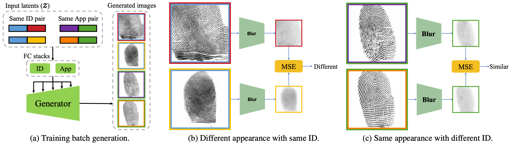
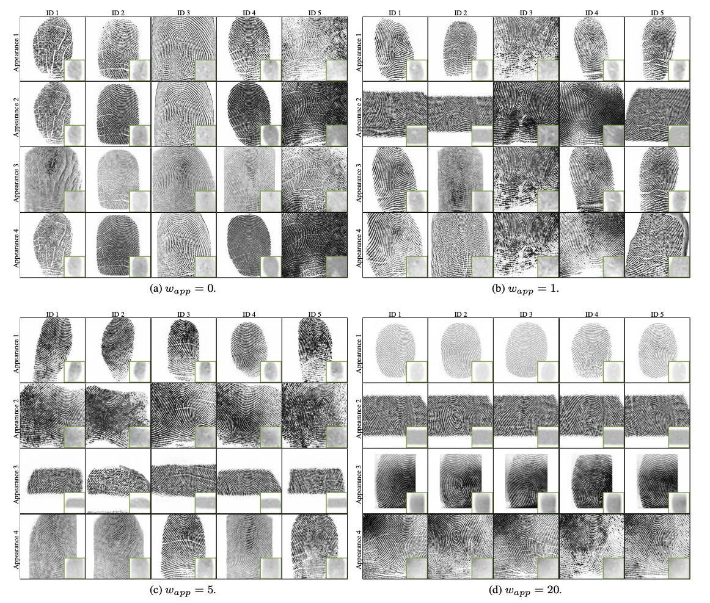

FPGAN-Control: A Controllable Fingerprint Generator for Training with Synthetic Data
Alon Shoshan
Nadav Bhonker
Ori Nizan
Emanuel Ben Baruch
Igor Kviatkovsky
Joshua Engelsma
Manoj Aggarwal
Gerard Medioni
Amazon

Abstract

In each training batch (a), both same ID pairs and same appearance pairs are generated. Same ID pairs have the same ID latent vector while same appearance pairs have the same appearance latent vector. The color of the inner image border corresponds to the fingerprint ID and the color of the outer border corresponds to the fingerprint appearance. Each image in the batch is blurred and downsampled, effectively removing it’s barometric features while still obtaining many of its appearance features. Blurred images with different appearance latents are pushed one from another (b), while blurred images with the same appearance latent are pulled towards each other (c).
Generation results of FPGAN-Control trained using different wapp

For a specific FPGAN-Control model, each column represents images generated with the same ID latent vector input and each row represents images generated with the same appearance latent vector input. For visualization of the appearance loss, the small images in green borders show the blurred representation of the fingerprint image used by the loss.Citation
@misc{shoshan2023fpgancontrol,
title={FPGAN-Control: A Controllable Fingerprint Generator for Training with Synthetic Data},
author={Alon Shoshan and Nadav Bhonker and Emanuel Ben Baruch and Ori Nizan and Igor Kviatkovsky and Joshua Engelsma and Manoj Aggarwal and Gerard Medioni},
year={2023},
eprint={2310.19024},
archivePrefix={arXiv},
primaryClass={cs.CV}
}